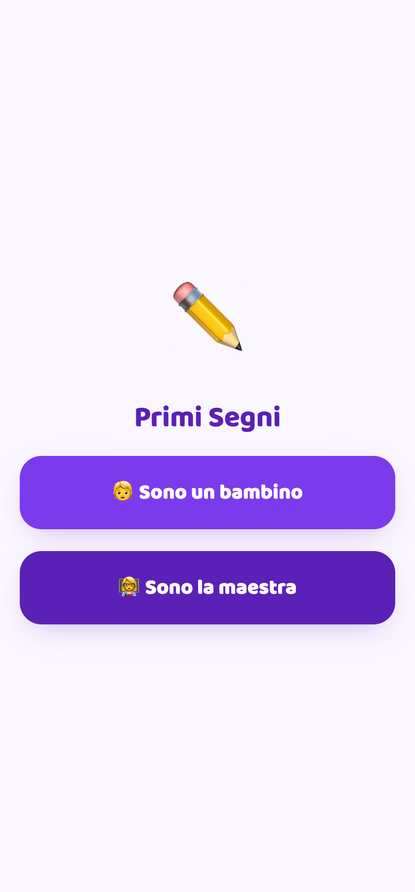
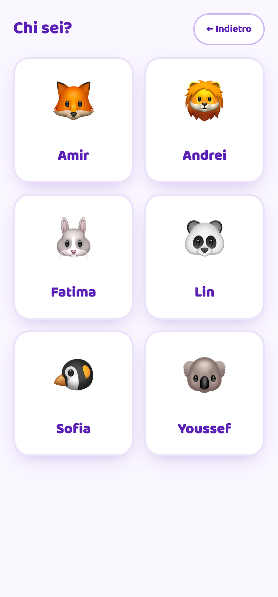
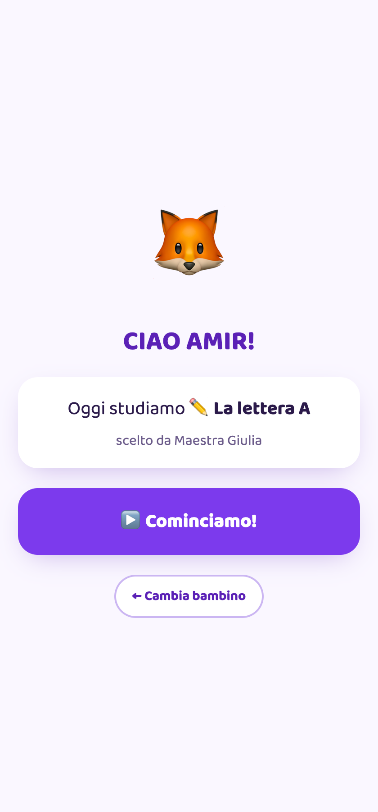
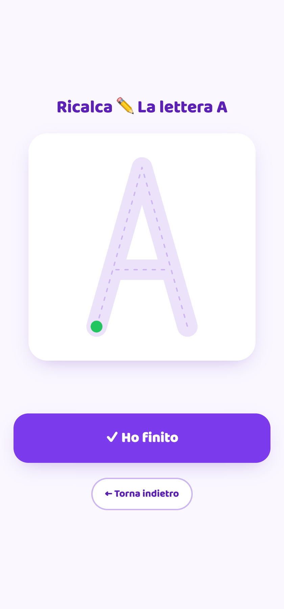
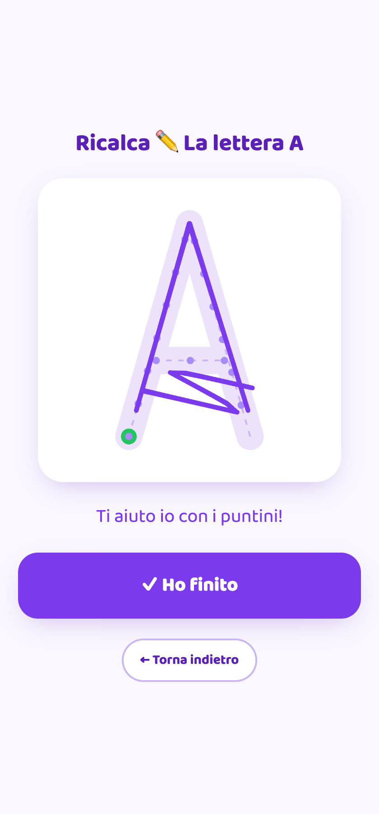
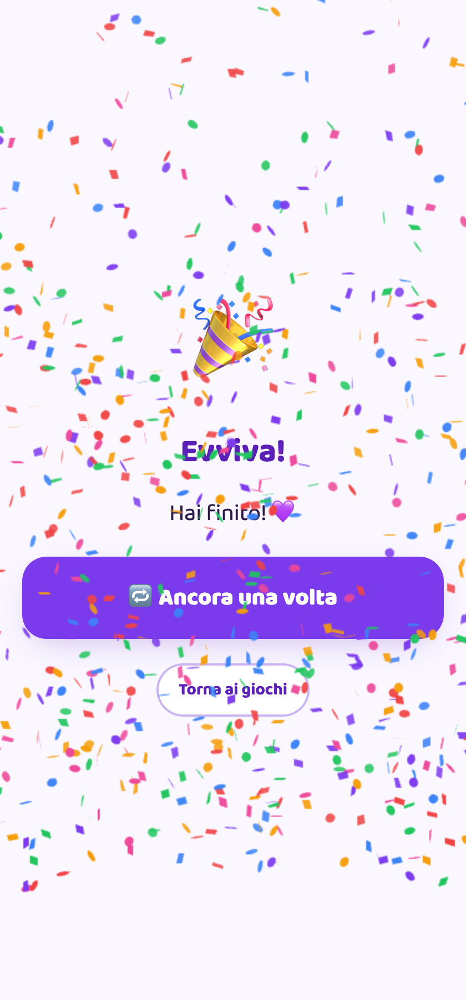
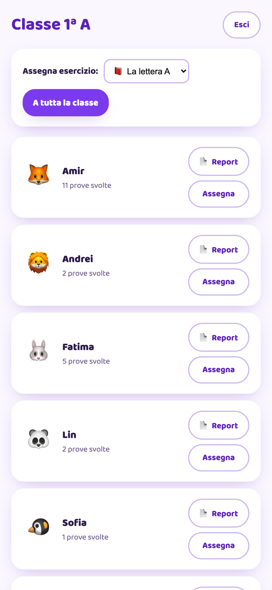
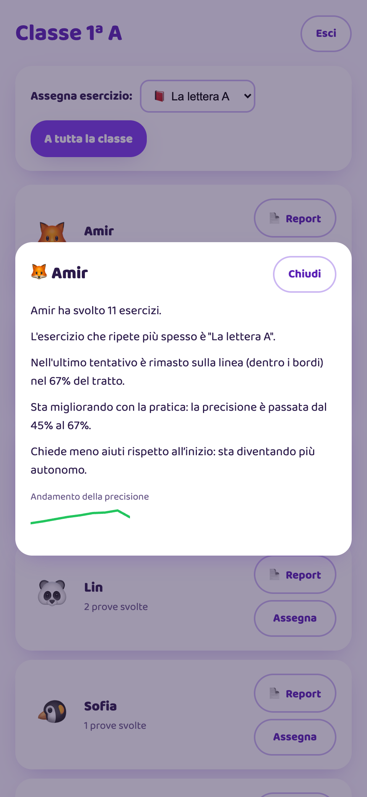
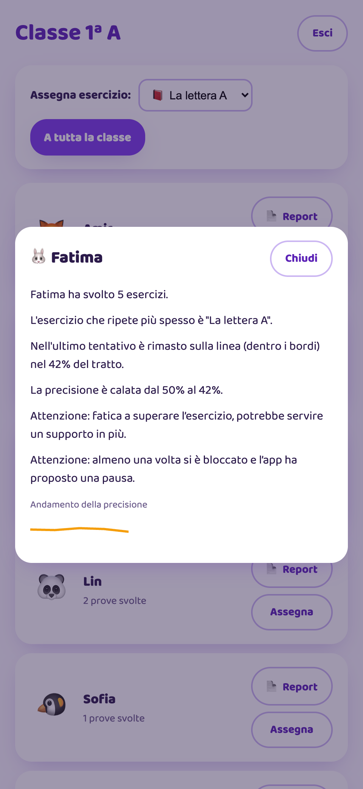

Una PWA che insegna ai bambini appena arrivati in Italia a ricalcare lettere e numeri in autonomia — guidati da audio e icone, con un report per la maestra.
Questa è Primi Segni: il nostro progetto da hackathon, arrivato secondo. Il nome richiama i primi segni grafici — i tratti di lettere e numeri — e i primi passi di un bambino in un Paese nuovo. In dieci minuti vi mostro il problema che risolve, come funziona dal vivo, e dove può andare. Cinque parole chiave da tenere a mente: audio-first, ricalco, feedback a regole, nessun modello AI a runtime, e il report per la maestra.
Profilo NAI (Neo Arrivato in Italia), prima elementare. Un profilo preciso, non generico.
Difficoltà linguistiche e alfabetizzazione bassa o nulla: non può leggere le consegne scritte.
Anche i genitori stanno imparando l'italiano mentre lavorano e si adattano a un Paese nuovo: non sempre riescono a seguire i compiti. Serve uno strumento che affianchi il bambino quando loro non possono.
È l'unico strumento sempre disponibile — a scuola e a casa. Da lì può esercitarsi da solo.
Può assegnare "compiti" travestiti da gioco fin dal primo giorno e seguire l'avanzamento di ogni bambino, capendo a colpo d'occhio chi va e chi ha bisogno di una spinta.
Partiamo dal profilo utente, uno solo e molto preciso, come chiedeva il bando. Un bambino NAI di sei anni, prima elementare. Non parla ancora l'italiano e spesso non legge in nessuna lingua: quindi non può leggere le consegne. A casa la famiglia sta ricominciando anche lei: i genitori stanno imparando l'italiano mentre lavorano e si adattano a un Paese nuovo, quindi non sempre possono seguire i compiti. Non è una mancanza di volontà, è una questione di tempo ed energie. L'unica costante è lo smartphone. E dall'altra parte c'è la maestra: con Primi Segni può assegnare dei "compiti" travestiti da gioco fin dal primo giorno e seguire da vicino l'avanzamento di ogni bambino, capendo a colpo d'occhio chi va e chi ha bisogno di una spinta. Tutte le scelte di prodotto discendono da questi quattro punti.
La soluzione parte da un'idea semplice: ogni bambino è accolto. Basta un momento — la mamma gli passa il telefono e lui gioca, mentre intorno c'è la famiglia. Il messaggio che arriva alle famiglie è questo: il vostro bambino è stato accettato e lo stiamo preparando a inserirsi meglio nel nuovo mondo. Poi il come, punto per punto. Tutto è audio-first: ogni cosa che appare viene anche letta ad alta voce, e il testo scritto è ridotto al minimo. Il login è con avatar, non con email: il bambino tocca il proprio animaletto, senza password e senza dover leggere. Il cuore è il ricalco col dito, con una misura in tempo reale di quanto il tratto resta dentro i bordi. E il feedback è sempre incoraggiante: aiuto quando sbaglia, festa quando finisce, mai un voto.



Ecco il flusso del bambino, catturato dall'app vera. Prima schermata: scelgo se sono un bambino o la maestra — e anche questa frase viene letta. Seconda: "Chi sei?", una griglia di facce, tocco la mia e l'app mi saluta per nome. Terza: mi dice cosa studiamo oggi, l'esercizio scelto dalla maestra, sempre con la voce. In tre tocchi, senza leggere una parola, un bambino di sei anni è dentro l'esercizio.

Questo è il cuore dell'app. Il bambino vede un "binario": la lettera disegnata come una banda spessa, con una linea tratteggiata al centro e un pallino verde che dice da dove partire. Mentre traccia col dito, ogni singolo punto viene testato con isPointInStroke — una funzione geometrica del canvas: sei dentro la banda di tolleranza, oppure fuori. L'inchiostro segue il dito in modo morbido grazie a perfect-freehand. Da questo esce un solo numero elegante: la percentuale di tratto rimasta dentro i bordi. È il segnale su cui gira tutto il resto.

Qui c'è la "capability agentica" richiesta dal bando — ma attenzione, è tutta logica a regole. L'app distingue due tipi di errore predefiniti e risponde in modo specifico, non generico. Se il dito esce dai bordi: incoraggiamento e "resta sulla linea". Se il bambino si blocca, fermo troppo a lungo: un hint su dove ripartire. E come adattamento della difficoltà, dopo tre errori fuori bordo compaiono i puntini-guida lungo il tratto; quando il bambino migliora, spariscono. Questo screenshot è vero: durante la cattura ho tracciato male apposta, l'app ha detto "Ti aiuto io con i puntini" e li ha disegnati sulla A. Nessun modello ha deciso nulla: è una soglia, tre errori.
I comportamenti "intelligenti" sono if e soglie deterministiche, in un unico posto condiviso — testati a unità.
Questo è il vincolo che ha guidato tutto il progetto: l'app è adattiva, ma non integra né un LLM né machine learning. Ogni comportamento "intelligente" è un if con una soglia. Quattro numeri riassumono il sistema: sopra l'ottanta per cento dentro i bordi il tratto è pulito; dopo tre errori compaiono i puntini; venti secondi fermo è uno stallo; novanta secondi in difficoltà fanno scattare la pausa protetta. E la cosa importante per un ingegnere: queste soglie vivono in un unico pacchetto condiviso tra web e api, mai sparse nei componenti. Cambiare una regola significa cambiare un numero, in un posto solo, con i test a coprirlo.

La seconda capability è il rilevamento del blocco, e qui c'è una scelta di prodotto a cui teniamo molto. Quando l'esercizio finisce, partono i fuochi d'artificio: una festa. Ma anche quando il bambino si arena e resta bloccato oltre soglia, l'app non lo lascia sul fallimento: chiude comunque con "per oggi abbiamo finito, yuppi", fuochi, riposo meritato. Un bambino di sei anni non deve mai uscire dall'app con la sensazione di aver sbagliato. La differenza è che quel blocco lascia una traccia dove serve davvero: una segnalazione scritta nel report della maestra, che le dice che il bambino si è bloccato e che l'app ha proposto una pausa.



Passiamo alla maestra, di nuovo con screenshot reali. Entra con un SSO finto della scuola e vede il cruscotto della classe: l'elenco dei bambini e, in alto, l'assegnazione degli esercizi al singolo o a tutti. Per ogni bambino c'è un mini-report scritto a parole, tono osservativo, nessun voto. Amir è la nostra storia di successo: la precisione è passata dal 45 al 67 per cento e chiede meno aiuti — sta diventando autonomo, e il grafico è verde in salita. Fatima invece fatica: precisione in calo, e il report la segnala con due avvisi "Attenzione" — che fatica a superare l'esercizio e che almeno una volta si è bloccata. La maestra, in un colpo d'occhio, sa su chi intervenire.
La % di tratto dentro i bordi è insieme la metrica, l'errore che innesca il feedback e ciò che guida l'adattamento.
Perché tutto questo è un vero miglioramento misurabile, e non una sensazione. Abbiamo scelto un solo segnale, che copre tre cose insieme: la percentuale di tratto dentro i bordi. È la metrica che sale, è l'errore che fa scattare il feedback, ed è ciò che guida l'adattamento. Attorno a questo tracciamo accuratezza in salita, tempo e stalli in discesa, aiuti richiesti in calo. Il "prima e dopo" è oggettivo: prima il bambino non resta nei bordi senza aiuto, dopo un ciclo di sessioni traccia da solo senza puntini e senza hint. E lo si legge nel trend del report, non in un'opinione. Nella demo lo abbiamo mostrato con dati storici e una sessione dal vivo.
React 19 + Vite + styled-components, PWA installabile. Pointer Events, glifi SVG, perfect-freehand, Web Speech API per l'audio.
Fastify + SQLite, validazione zod. Logga ogni tentativo e calcola i report a regole. Serve la PWA same-origin.
Il "contratto": tipi e soglie condivisi tra web e api. Un'unica fonte di verità, mai duplicata.
Due parole sull'architettura, perché è coerente con il target. È una PWA leggera e installabile, che grazie al service worker funziona anche offline — fondamentale per chi ha connettività intermittente. Il web è React con Vite; l'input tattile usa i Pointer Events, i glifi sono path SVG, l'inchiostro è perfect-freehand e l'audio la Web Speech API di sistema. L'api è Fastify con SQLite, che registra ogni tentativo e calcola i report. E in mezzo c'è il pacchetto shared, il contratto con tipi e soglie condivisi. Tutto in TypeScript strict. L'abbiamo costruita in cinque ore, in due, usando Claude Code in modo strutturato: subagenti per esplorare, una pipeline per le feature, e sempre la review del diff prima del commit.
Il "gioco dell'ape" (pensiero computazionale) e il "diario del tempo" (vocabolario) sono già mockup: bastano da riempire.
Oggi A·E·I·O·M e 1·2·3. La meccanica è identica: aggiungere un glifo è un dato, non codice nuovo.
Istruzioni audio in arabo, ucraino, urdu… solo per le prime spiegazioni. In classe si pratica l'italiano.
Esportabile, con più indicatori nel tempo, per alimentare il Piano Didattico Personalizzato — se la maestra lo ritiene.
E adesso il futuro, quattro direzioni concrete. Primo: nuovi giochi language-free — nell'app ci sono già le tessere placeholder del gioco dell'ape, per il pensiero computazionale, e del diario del tempo, per il vocabolario; sono candidati naturali per una versione due. Secondo: completare alfabeto e numeri — oggi abbiamo cinque lettere e tre cifre, ma la meccanica è la stessa, aggiungere un glifo è un dato, non codice nuovo. Terzo: un onboarding nella lingua madre, arabo, ucraino, urdu, solo per le prime spiegazioni, perché poi in classe si pratica l'italiano. Quarto: il report esportabile verso il PDP, il Piano Didattico Personalizzato, con più indicatori nel tempo — ma sempre lasciando la decisione alla maestra. Nessuna di queste rompe il vincolo: restano tutte a regole.
Ovunque parta, ogni bambino ha la stessa possibilità di fare pratica e di sentirsi parte della classe — sul telefono che ha già in mano. Tecnologia semplice e trasparente, con la scuola che lo accompagna passo passo.
Grazie! — Pio Stravino & Manuel Bisanti
Chiudo con il messaggio che vorremmo restasse. Primi Segni dà a ogni bambino la stessa possibilità di fare pratica e di sentirsi parte della classe, ovunque parta: un bambino appena arrivato da un altro Paese, ma anche un bambino cresciuto qui che a casa non trova gli strumenti per esercitarsi. Basta il telefono che ha già in mano, con una tecnologia semplice e trasparente. E dall'altra parte la maestra lo accompagna passo passo: vede il progresso e ha materiale concreto, se lo ritiene, per il Piano Didattico Personalizzato. Grazie.
Frecce ← → o barra spaziatrice · N per le note